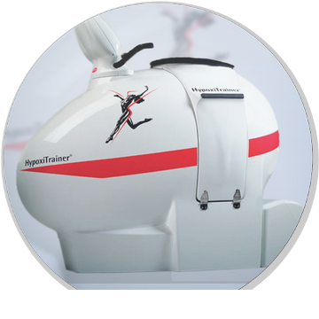

A HYPOXI-RÓL
A HYPOXI tréning az egyik legtökéletesebb megoldás arra, hogy elérd az ideális alakod.
A HYPOXI tréning a célzott zsír és cellulit csökkentés harcában az egyik legnagyobb tudományos fejlesztés, melyet világszerte használnak. Hogy miért? Mert egy szelíd edzésprogrammal természetes úton célba veszi a makacs elváltozásokat a nem kívánt területeken. Az edzés és a vákuum által generált nyomás együttesének segítségével háromszor több kerületben a veszteség 3-szor rövidebb idő alatt, mintha bármely másmilyen testmozgást végeznél!
Kezd az átváltozást ma!
A testmozgás és az egészséges táplálkozás az első lépés a helyes irányba, hogy elérjük az ideális alakunkat. Az időhiány nem feltétlenül teszi lehetővé számunkra, hogy órákig megerőltető edzéseket végezzünk, sőt az erőteljes mozgással sem mindig a körméret csökkenést, hanem erősödést érhetünk el.

Hogyan működik a HYPOXI Professional Trainer?
A Hypoxi feltalálója Dr. Norbert Egger, egy közismert osztrák születésű sport tudós. Dr Norbert Egger észrevette, hogy a szigorú diéta és a rendszeres testmozgás ellenére sokan küzdenek azzal, hogy eltüntessék a felesleges zsírt, de mindhiába. Ezért összeállított egy kutató csoportot, hogy megtudja, mi okozza ezt? A tanulmányai alapján fejlesztette ki a HYPOXI-t 1998-ban, melyet ma is világszerte több mint 40 országban használnak sikerrel.
Miért olyan hatásos?
Észrevette, hogy a zsír könnyebben ég azokon a területeken ahol jobb a vérellátás. Annak érdekében, hogy célzott legyen a zsírégetés, ezeken a területeken növelnünk kell a vérkeringést. A HYPOXI pontosan ezt teszi: a vákuum és kompressziós terápia képes növelni a vér áramlását a derékra, hasra, csípőre, fenékre és a combra, miközben mérsékelt testmozgást végzünk. Független vizsgálatok azt mutatták, hogy 3-szor hatékonyabb, mint más rendszeres edzés.
Mikor nem alkalmazható?
Várandósság, gyermekágy, szív- és érrendszeri megbetegedések (érgyengeség, extrém magas vérnyomás, trombózis, gyulladt visszér), akut fertőzés, ér, izom, szövet vagy bőrgyulladás illetve mozgásszervi megbetegedés.
Kérünk, minden alkalomra hozz magaddal váltóruhát (póló, nadrág, zokni), törölközőt és vizet!
Az alakformálás az egyetlen játék, melyben akkor is nyersz, ha vesztesz!